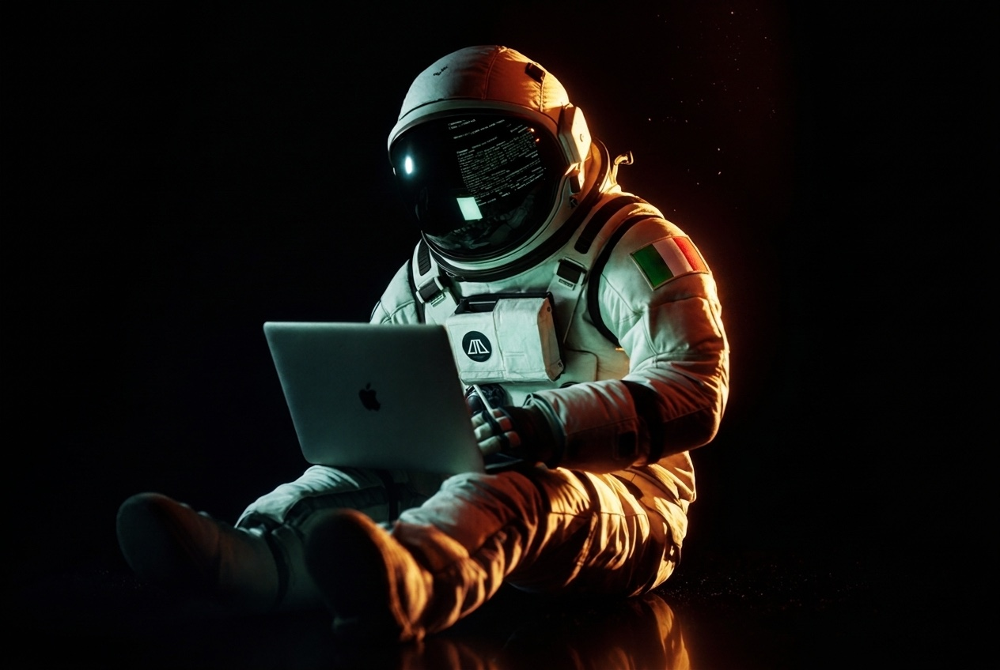

Towardthe stars
Working with me means going beyond: response, then evolution.
I'm 22, from Bari, Italy. Two engineering tracks at once: cybersecurity by discipline, sound by instinct. The music you're hearing is mine.
The
trajectory
Eight burns from the Adriatic to escape velocity.
Scroll, or raise an open palm and push upward. Each waypoint lights as you pass it.

Payload
manifest
Three items cleared for exhibition. Everything else stays in the hold.

Systems
online
Three core drives, three growing orbits.
Hover or focus a node to read its telemetry. Inner orbit is discipline; outer orbit is appetite.
SELECT A NODE
Past lives
arcade
An 8-bit chart of everywhere the trajectory has touched. Walk the pilot, dock at a beacon, read the log. One of these logs matters to the moon.
Arrows / WASD to fly · walk into a beacon to dock
The moon
keeps a date
Some days split a life into before and after.
Answer with the day everything changed: the date I moved to Gran Canaria. Crack it and you win my attention, my friendship, and a coffee wherever our orbits cross.
Transmission received
Welcome to the crew
You solved what most visitors scroll past, which tells me plenty. I'll reply personally. First coffee, espresso or cortado, is my treat.
No middlemen between you and me.
Open a
channel
Hand-built, self-hosted, zero trackers. Your camera, microphone and audio choices never leave this browser. © 2026 Flavio Giorgio Guarini.